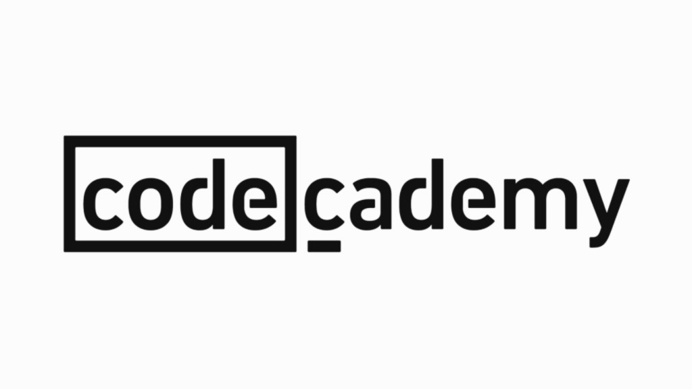
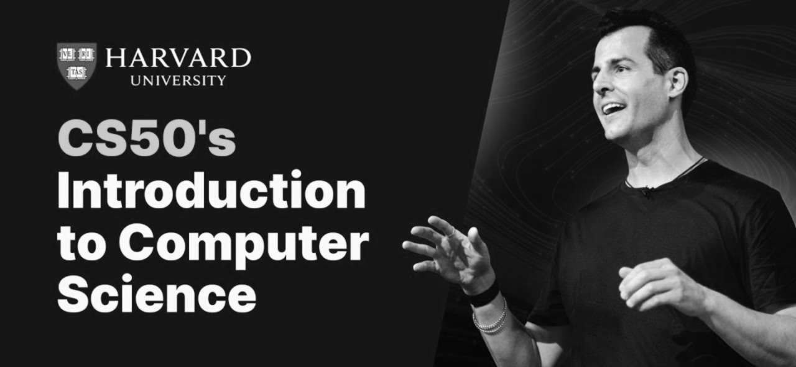

Originally from Syria, I’m a high school student now continuing my journey in Egypt.
Passionate about programming, I’m always eager to learn, solve problems, and create innovative solutions.
With every challenge, I strive to grow and make a meaningful impact.
Some of my skills are :

- Programming with C, Java Script and Python.
- Working with React, Flask and Bootstrap.
- Using SQLite for database mangment.
About Me :
I started learning programming about two years ago, though my progress was sometimes interrupted by school and other commitments. To build my skills, I took courses on Codedemy, where I learned HTML, CSS, JavaScript, the command line, and React—gaining a strong foundation in web development and creating interactive, responsive web pages.


Additionally, I completed Harvard's CS50x, an introduction to computer science that pushed me to think critically about algorithms, data structures, and software design. Through this course, I worked with C, Python, SQL, and Flask, applying them to real-world domains like web development. These experiences have deepened my understanding of programming and problem-solving, fueling my passion for software development.
My goal is to earn a place at one of the world's top universities and secure a scholarship to study computer science. I’m eager to deepen my knowledge in this dynamic field and explore how technology can create meaningful change. Beyond academics, I look forward to connecting with like-minded individuals and collaborating on innovative projects. This is just the start of my journey. I’m always seeking new challenges and opportunities to grow. For me, programming and computer science aren’t just interests—they’re my true passions.